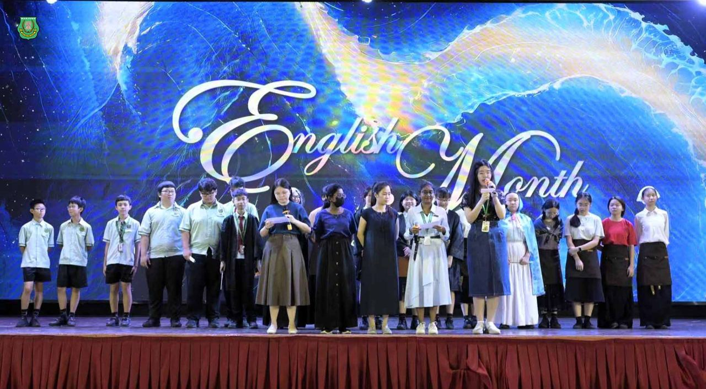
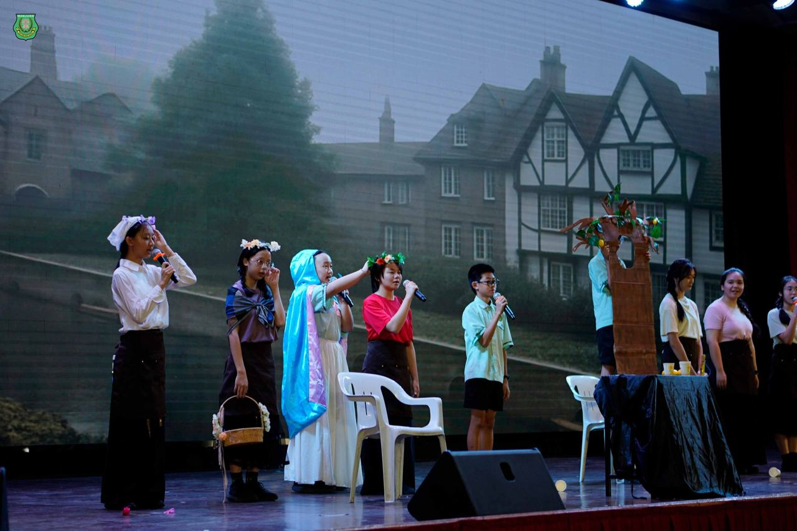
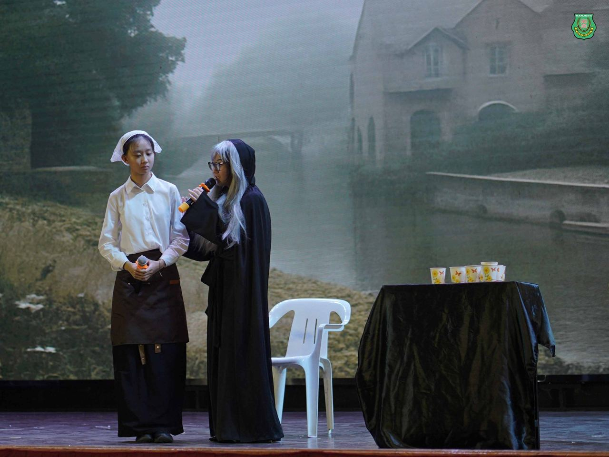
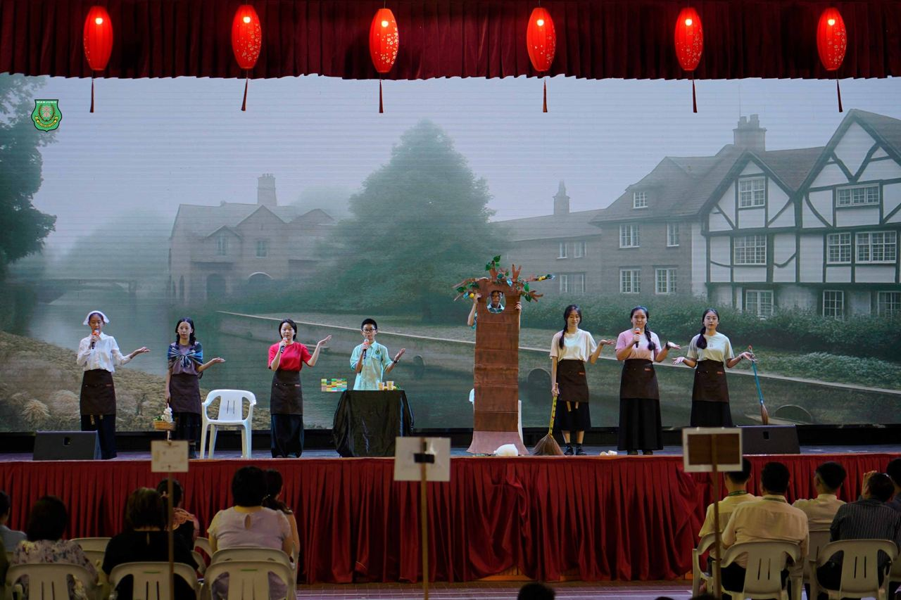
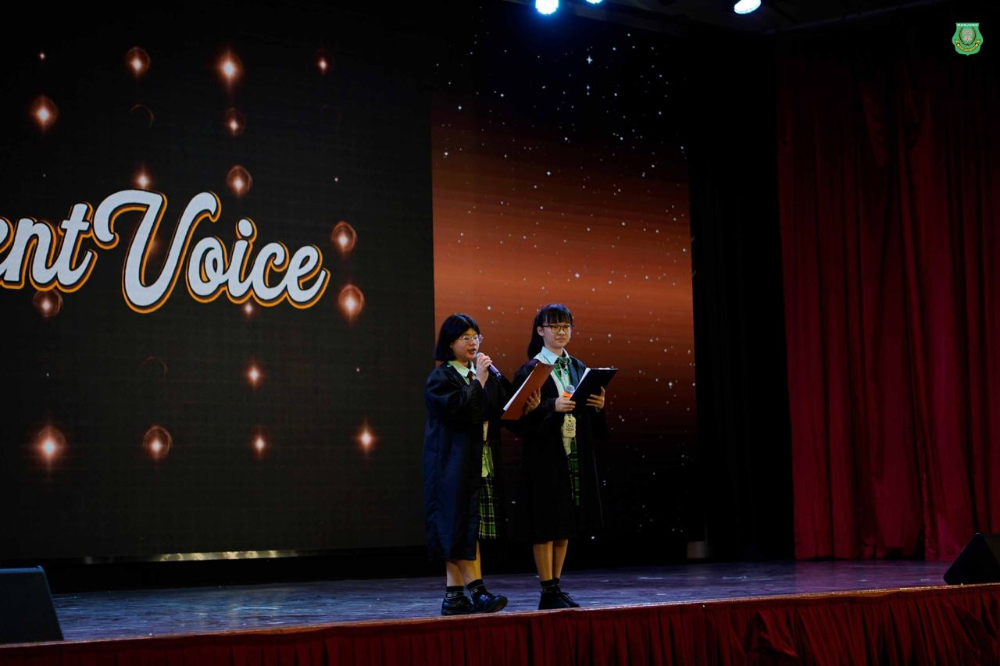
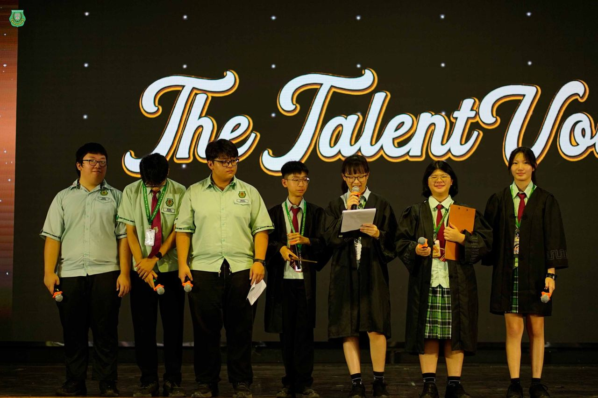
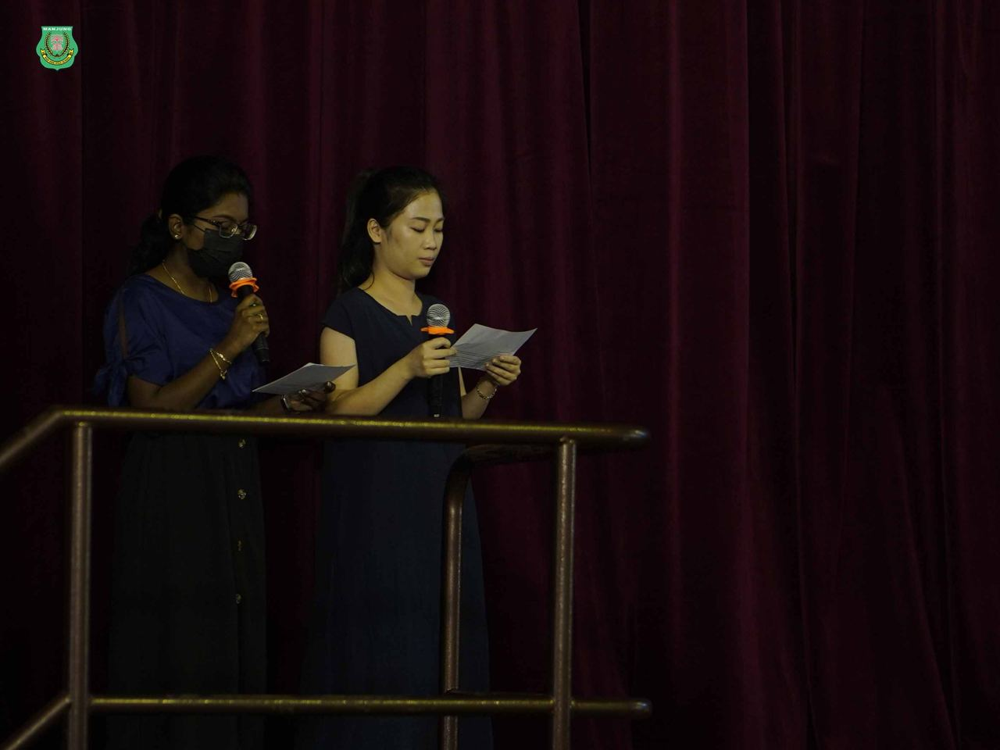

南华独中“#英语月”热烈展开
南华独中“#英语月”热烈展开
打造英语友善校园氛围
激发学生学习热情
为营造积极向上的英语学习氛围，南华独中 #英文组 于八月份精心策划并推动了一系列别开生面的“英语月”活动。活动内容丰富多样，既寓教于乐，又成功激发了师生们主动接触英语的兴趣与热情。
活动在周会上正式拉开序幕，师生们欣赏了两场精彩的表演：由学生呈献的英语短剧 The Lemon Tree，以及极具创意的配音节目 The Talent Voice，生动演绎让全场气氛高涨，为英语月注入一股热烈的学习动力。
在接下来的两周里，英文组老师们精心安排了不同的活动：第二周的 “听歌填词”（The Lyrics Hunt） 让同学们在旋律与歌词之间穿梭，不仅提升了听力能力，也让课堂外的学习变得轻松有趣；第三周的 “Hidden Words Challenge” 则以组合单字的方式考验同学们的词汇量与敏捷度，充满挑战性与趣味性。两个活动都获得师生们的踊跃参与，现场气氛热烈。
此外，英语月期间，校园内更积极鼓励师生以英语交流，推动打造英语友善校园空间，使英语成为日常沟通的一部分。
校长陈丽冰博士表示：“语言是沟通世界的重要桥梁。英语月不仅为同学们提供了展示与实践的平台，更让校园充满活力与创造力。我欣慰地看到同学们积极参与，也看见了老师们循循善诱引导学生在日常生活中以英语会话，希望他们能把这种学习的热情延续到更长远的人生当中。
英文科主任李淑桦老师分享道：“我们策划英语月的初衷，是希望通过多元活动引导同学们在轻松的氛围中接触英语、运用英语。看到同学们从参与中收获快乐与信心，这正是英语月最大的成果。我们相信，这将成为推动英语学习的一股持续力量。”






